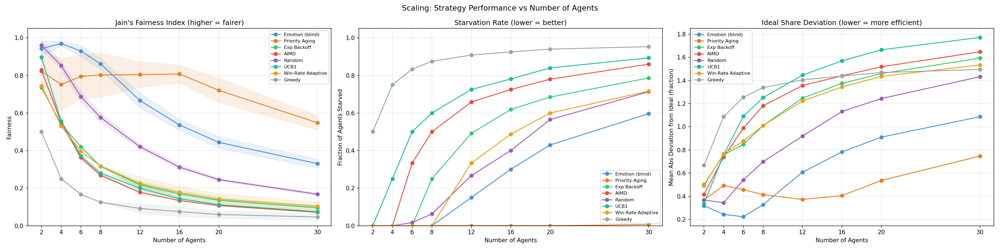

This Tick
Frustration Over Time (all agents)
Overview
This project builds a multi-agent resource competition simulation in which agents compete for limited resources organized into reward tiers. The primary aim is to embed an "emotion"-inspired strategy for agent cooperation in an asynchronous system that maintains only local knowledge.
Each agent maintains interpretable internal state variables inspired by the emotions that come up from winning and losing. Losing, especially multiple times, tells the loser they may need to improve their efforts or give up and try something else. Winning, however, can indicate that the winner could be exerting too much effort, and perhaps they could win with less. Additionally, winning and hogging resources is a non-social behavior and can inspire the dislike of one's community. The emotion strategy approaches resource competition from the lens of wanting to win the resource, but also wanting to maintain social inclusion. The emotion system balances reward reinforcement and social costs as decision drivers.
The core question: do emotion-inspired behavioral regulators produce fairer, more starvation-resistant resource allocation than classical scheduling approaches?
Experiment Setup
Each simulation tick, agents simultaneously and independently bid for one of three resource tiers. There is no coordination — agents commit to a tier without knowing what others chose. One winner is selected per tier per tick based on bid strength, and rewards are revealed afterward.
| Tier | Reward |
|---|---|
| Tier 1 | 10 units |
| Tier 2 | 5 units |
| Tier 3 | 2 units |
Agents are heterogeneous: each has a fixed skill_level (base bid strength),
regen_rate (energy recovered per tick), persistence, and
risk_aversion drawn randomly at initialization. This means some agents are
structurally stronger than others, making fairness harder to achieve and starvation more likely.
Speed costs energy regardless of outcome, so agents must manage energy alongside emotional state.
All strategies operate asynchronously with local information only. No agent knows what another is doing before committing. This was a deliberate constraint: any strategy requiring global coordination would be unrealistic in distributed settings.
| Strategy | Logic |
|---|---|
| Emotion (this work) | Frustration, reward reinforcement, and social cost drive tier selection and bid speed. Agents learn which responses work via outcome-weighted behavioral weights. |
| Priority Aging | Priority score grows each tick without a win; resets on win. Higher priority → higher tier target. |
| Exp Backoff | After consecutive losses, waits exponentially longer before retrying a tier. |
| AIMD | Additively increases bid aggressiveness on success; halves it on collision (like TCP congestion control). |
| Greedy | Always targets Tier 1 at full speed. No adaptation. |
| Random | Picks a tier uniformly at random each tick. |
| UCB1 | Treats tiers as bandit arms; selects the tier with the highest upper confidence bound on reward. |
| Win-Rate Adaptive | Shifts tier target based on recent win rate per tier. |
Three Experiments
- Homogeneous — all agents use the same strategy. Measures how each strategy performs against itself across 6 agents, 200 ticks, 10 random seeds.
- Scaling — sweeps agent count from 2 to 30 to see how each strategy degrades under increasing competition pressure.
- Mixed population — all 8 strategies compete simultaneously in the same simulation. Tests whether emotion agents, a cooperation-inspired strategy, are exploitable by selfish, competition-inspired strategies.
Emotion Agent Design
Each agent carries three emotional variables that evolve each tick:
frustration — builds on loss, decays on win reward_reinforcement — builds on win, signals recent success social_cost — builds on consecutive wins, handicaps dominant agents
Bid formula:
bid = skill_level × speed_used × (1 + frustration) × (1 - social_cost)
Frustration amplifies bids — desperate agents fight harder. Social cost suppresses bids — dominant agents voluntarily handicap themselves.
When frustration exceeds a threshold, the agent faces a three-way decision:
| Choice | Action | Logic |
|---|---|---|
| Stay | Same tier, same speed | Wait for an opening |
| Try Harder | Increase speed, spend more energy | Fight for the resource |
| Give Up | Drop to a lower tier | Accept a smaller reward |
Behavioral weights are initialized from personality (persistence,
risk_aversion) and shift gradually based on outcomes. An agent that tried
harder and won becomes more likely to try harder next time. Agents with identical starting
personalities diverge over time based on their history.
When social awareness is enabled, dominant agents self-limit: tracking own recent win rate, optionally observing others' frustration (transparent mode), and forcibly yielding to a lower tier when social cost crosses a threshold. This produces voluntary yielding — dominant agents back off not because they are forced to, but because accumulated social cost handicaps their bids.
Interpretability
Every decision is fully explainable by the agent's internal state — no black box. Each agent logs its full state before and after every tick. The interactive simulation above lets you step through each tick and observe this in real time for every agent simultaneously.
Agent 3 | tick decision: target tier : 1 speed used : 0.7 (bid=0.367) frustration : 0.25 (before) → 0.10 (after) | action: try_harder reinforcement: 0.99 social_cost: 0.0 weights : try_harder=0.353 give_up=0.561 stay=0.087 energy : 92.5 / 100.0 outcome : WON reward=10
Metrics
Three metrics are reported for each strategy:
Jain's Fairness Index measures how equally total rewards are distributed. It ranges from 1/n (one agent gets everything) to 1.0 (perfectly equal):
J = (Σ rᵢ)² / (n × Σ rᵢ²)
Starvation Rate is the fraction of agents that went 20 or more consecutive ticks without winning any reward. This catches cases where a minority of agents are completely shut out — something Jain's index can miss if the majority are doing well.
Ideal Share Deviation measures efficiency alongside fairness. It computes each agent's deviation from their theoretical ideal share — the reward they would receive if all available resources were distributed perfectly evenly:
ideal = (max_reward_per_tick × num_ticks) / n deviation = mean(|rᵢ - ideal|) / ideal
Lower is better; 0.0 means every agent received exactly their ideal share. This metric was added after observing that Priority Aging looked competitive on Jain's fairness despite agents repeatedly colliding on Tier 1 and wasting bids.
Results — Homogeneous Populations
6 agents, 200 ticks, 10 seeds.
| Condition | Jain's Fairness | Starvation | Ideal Share Dev. |
|---|---|---|---|
| Emotion | No Social | Transparent | 0.9464 ± 0.020 | 0.000 | ~0.20 |
| Emotion | Social | Transparent | 0.9375 ± 0.025 | 0.000 | ~0.20 |
| Emotion | Social | Blind | 0.9340 ± 0.028 | 0.000 | ~0.20 |
| Emotion | No Social | Blind | 0.9301 ± 0.029 | 0.000 | ~0.20 |
| Baseline | Priority Aging | 0.7950 ± 0.117 | 0.000 | ~0.47 |
| Baseline | Random | 0.6870 ± 0.029 | 0.017 | ~0.52 |
| Baseline | Win-Rate Adaptive | 0.3966 ± 0.000 | 0.000 | ~0.88 |
| Baseline | Exp Backoff | 0.4205 ± 0.000 | 0.000 | ~0.85 |
| Baseline | UCB1 | 0.3714 ± 0.000 | 0.500 | ~1.09 |
| Baseline | AIMD | 0.3626 ± 0.011 | 0.333 | ~0.97 |
| Baseline | Greedy | 0.1667 ± 0.000 | 0.833 | ~1.24 |
At 6 agents, emotion conditions outperform all baselines on fairness and starvation. The emotion system achieves 0.93–0.95 fairness with zero starvation across all variants. Priority Aging is the best baseline at 0.80 fairness, but with high variance and an ideal share deviation of ~0.47 — more than double the emotion agents' ~0.20.
Ideal share deviation reveals a hidden cost of Priority Aging. On Jain's fairness alone, Priority Aging looks competitive. But because Priority Aging agents pile into Tier 1 and collide repeatedly, they collectively under-collect relative to what's available. The emotion agents' adaptive tier selection results in far less wasted effort.
Counterintuitive: No Social | Transparent edges other conditions. Seeing others' frustration without activating the social cost mechanic helps agents time their bids better, but adding social yielding on top causes some over-adjustment. More information is not always better when coupled with a cooperative response mechanism.
Results — Scaling
Emotion agents perform best from 2–8 agents on all three metrics. At ~8 agents (roughly 2.7 agents per tier), a crossover occurs: Priority Aging becomes more efficient on ideal share deviation while emotion agents fall behind. Fairness and starvation advantages for emotion agents also erode at this threshold.
The frustration-based backing-off behavior is adaptive in small groups but becomes a liability under high collision pressure. Agents retreat to lower tiers and leave Tier 1 rewards unclaimed. Priority Aging's aggressive always-Tier-1 approach is more efficient when competition is intense enough that cooperation yields diminishing returns. Emotion-based regulation is the right strategy when the agent-to-resource ratio is low — our experiment demonstrates erosion at 8/3 (agents per tier) where Priority Aging becomes more effective. Emotion agents still beat all other strategies throughout the scaling test.
Results — Mixed Population
2 agents of each strategy competing simultaneously (16 total), 500 ticks, 10 seeds. Overall system fairness collapsed to 0.2298 ± 0.062 — far below the 0.93 seen in homogeneous emotion populations.
| Strategy | Mean Reward | Win Rate | Starvation |
|---|---|---|---|
| Greedy | 1767.0 ± 692.6 | 0.353 ± 0.139 | 0.550 |
| UCB1 | 1205.2 ± 342.5 | 0.720 ± 0.165 | 0.000 |
| Priority Aging | 665.5 ± 293.5 | 0.155 ± 0.042 | 0.000 |
| Win-Rate Adaptive | 349.1 ± 498.5 | 0.110 ± 0.134 | 0.750 |
| Random | 138.2 ± 164.6 | 0.096 ± 0.109 | 0.750 |
| Emotion | 114.9 ± 104.7 | 0.060 ± 0.054 | 0.900 |
| Exp Backoff | 3.2 ± 4.3 | 0.002 ± 0.002 | 1.000 |
| AIMD | 2.7 ± 2.0 | 0.001 ± 0.001 | 1.000 |
Aggressive strategies dominate. Greedy wins the most reward by always targeting Tier 1; UCB1 achieves the highest win rate by efficiently learning which tier has the least competition. Neither yields, and in a field of 8 competing strategies, that aggression pays off.
Emotion agents are severely exploited. With 90% starvation and only 6% win rate, emotion agents get crowded out almost completely — though Exp Backoff and AIMD perform even worse and starve at 100%. The cooperative backing-off behavior, useful in homogeneous populations, becomes a liability when surrounded by multiple aggressive strategies simultaneously. There is simply no room to back off into.
This is an instance of the cooperator-defector problem. Emotional regulation is a cooperative strategy: it works optimally when all participants play by the same norms. In a fully mixed population with multiple defecting strategies, cooperation is not just exploited — it is eliminated. The key insight is that emotion-based regulation is a social contract: its effectiveness depends on adoption. In a uniform population it produces near-optimal fairness; in a mixed population it raises the question of what enforcement or incentive mechanisms would make cooperation stable.
Limitations
- Priority aging is untuned. The aging rate (0.08 per lost tick) was chosen without parameter search. A well-tuned version would likely perform significantly better.
- Seeds are not truly independent. Seeds 0–9 vary agent attribute distributions (skill, regen, personality) but not the fundamental system dynamics. Variance across seeds reflects sensitivity to agent attributes, not to different environmental conditions.
- Mixed population uses equal strategy counts. The cooperator-defector finding may be sensitive to the ratio of strategies. At what adoption rate does emotional regulation become beneficial even in a mixed population?
- No mechanism for enforcing cooperation. The mixed population result motivates the question of what incentive or enforcement mechanisms could stabilize cooperative behavior against exploitation — analogous to mechanism design in game theory.
- Fairness metric rewards participation. Jain's index is computed over total rewards. Because emotion agents win across all three tiers while some baselines concentrate on tier 1, emotion agents accumulate more total rewards with more even distribution. This inflates the fairness metric relative to a metric that only measures tier 1 access equity.
What This System Is Not
- Not a neural network. All decisions are driven by explicit, inspectable state variables and deterministic update rules. Every decision has a traceable explanation.
- Not a classical scheduler. Unlike OS schedulers, agents are self-interested and adaptive. Fairness is emergent, not enforced.
- Not a complete solution. This is a simulation with known limitations. The results suggest emotion-based regulation could be promising in homogeneous, cooperative systems with small agent-to-tier ratios — but more testing is needed to confirm.
Future Work
- Formal characterization of the agents-per-tier threshold: vary tier count and capacity to determine whether the ~8-agent crossover is driven by ratio or absolute count
- Stability mechanisms for mixed populations: what incentives or enforcement make emotional cooperation stable against selfish strategies (analogous to mechanism design in game theory)
- Parameter sensitivity analysis for aging rate, frustration threshold, learning rate
- LLM-hybrid extension: use a language model to set initial emotional state based on contextual situation description, with deterministic rules handling evolution
- Survival mechanics: agents with finite lifespan must accumulate minimum resources to survive, adding existential stakes to the emotional dynamics
- Formal analysis of convergence and fairness bounds
How to Run
Requires Python 3 and matplotlib. No other dependencies.
pip install matplotlib
Homogeneous experiment (6 agents, 200 ticks, 10 seeds):
python run.py
Scaling experiment (agent counts 2–30, 200 ticks, 10 seeds):
python run_scaling.py
Mixed population experiment (all 8 strategies, 500 ticks, 10 seeds):
python run_mixed.py
Single seed with per-agent decision explanations:
python run.py --seed 42 --explain
Regenerate the interactive simulation data for this website:
python export_json.py --ticks 200
Result Plots
Fairness & Starvation — Homogeneous Conditions

Mixed Population — Strategy Comparison

Average Frustration Over Time

Tier Distribution by Condition

Individual Agent Rewards — Mixed Population

Scaling: Performance vs Number of Agents
